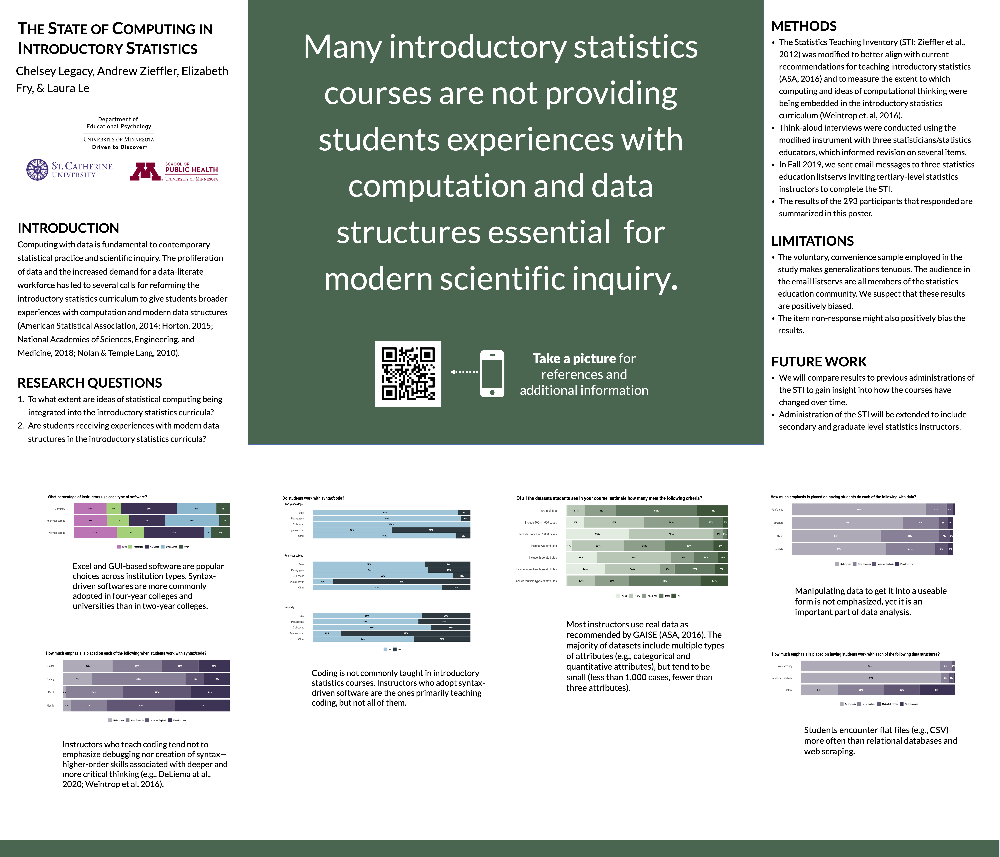

./assets/body-header.qmd
Our department has an annual Graduate Student Research Day (GSRD) in which students present their research for the rest of the department. Although there are five speakers, one from each program in the department, the majority of students participate in a poster session. This year my student Chelsey Legacy put together a poster to present some of the data we collected from a fall administration of the Statistics Teaching Inventory.
One of our research team members (Laura Le) suggested we use the “Better Research Poster” format. I was not familiar with this format, but a little Googling quickly brought up several articles (e.g., this Inside Higher Ed article), and tweets (#betterposter). Here is the example from the Inside Higher Ed article:

The idea behind this according to its originator, Mike Morrison, is that it quickly allows a poster session attendee to see the main finding, which is printed prominently in large type and in plain language. After reading about this, our team agreed to give it a try.
Our Poster and Experience
The first thing that is plainly obvious is that the amount of text on one of these posters needs to be vastly reduced from a conventional research poster. For us this meant a lot of thinking about what was necessary to include in terms of introduction/rationale, methods, results, and discussion. We went through several iterations of rewrites, each time really trying to distill things down to what was essential. It is said brevity is the soul of wit; it is also the key to making one of these posters. Below is a screenshot of our final poster.

After a couple drafts of the text, we made some design decisions for the poster. First, we opted to make the main finding area a bit smaller than the example poster. This gave us more room for the content. Secondly, we moved our results (which took up the most space) to the bottom of the poster. Initially we had the results on the right-side similar to the example poster, but the layout with the results moved to the bottom felt better both functionally (all the text is aligned at the top of the poster and can be read left-to-right) and aesthetically. Lastly, we removed all of the references from the poster itself (which removed a lot of text) and put them on a website that can be accessed from the QR code displayed on the poster.
One thing that came from trying different layouts and having to be cognizant of the amount of poster space was that we reduced the presented results to a series of six plots. We also included a short caption for each figure to help poster viewers navigate the findings. These captions were also re-edited many times before we settled on our final prose.
Creating the Poster
I ultimately used Apple’s Keynote to create our poster. In retrospect, I would have perhaps been better off using Pages or a more dedicated layout program. The big advantage in these programs is the use of guides and grids to align text boxes, margins, etc. I used a custom slide size and set the dimensions for the poster to 42” x 36” (or 3024 pixels x 2592 pixels).
As someone who thinks about layout and design (I love typography and book design!), I experimented with several different fonts. I wanted a font that was clean and readable. In our poster I settled on Lato which is a sans serif font with super clean lines. I also decided to use the same font for the headings, which we bolded and set in uppercase letters. (Google Fonts is a great site for seeing how different fonts pair together if you want to use differing fonts for body text and headings.) The size and spacing for the body text and headings were set by trial-and-error after we had finalized the text on the poster until we got something that looked good, filled the space appropriately.
After deciding on the background color for the main finding, we used complimentary color palettes in the plots we created. This was tricky as the color palettes for the plots also need to reflect the measurement scale of the data For example, the colors used to display the likert scale data needed to reflect the ordinality of the responses; lighter hues used for less positive values and darker hues used for more positive values. We also needed to be sure that the palettes were color-blind friendly. We used this simulator to test the palettes on the final images.
We generated a QR code from this site that linked to the website where we posted the references and a PDF copy of the poster. One other important caveat for printing posters is that your images need to be pretty high resolution to avoid pixelation when they print. We converted all of our images to at least 300dpi using Apple’s Preview application. You could pretty much use any imaging application for this (e.g., ImageMagick, Inkscape, MS Paint).
Resources
Below is the Keynote file I used to create our poster. Feel free to use or adapt it. I also exported this to PowerPoint, but the Lato font seems to generate slightly differently on the PPTX slide.
Here are some other resources that may be helpful:
- Mike Morrison’s Better Scientific Poster repository on OSF
- Butterick’s Practical Typography: A free online book that presents some of the basic ideas of fonts and typography.
- QR Code Generator: Create and format a QR code that links to whatever URL or file you want.
- Color Blindness Simulator: Simulate what the colors in an image look like for people with many different types of color-blindness.
- Spoonflower: This place will print your poster on fabric and ship it to you for a great price relative to many other places.
- List of Fee Fonts: The fonts we used may not be acceptable for commerical use, and you may want to find more open/free fonts. This is but one of many. Google Fonts also has many fonts available for commerical use. Thank you to Brianna Miller for bringing this to my attention.